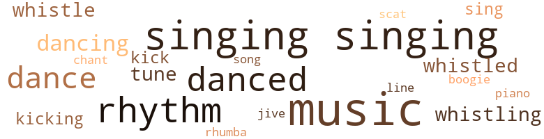
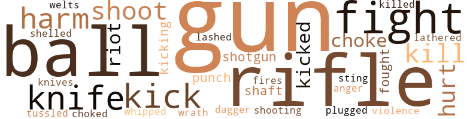
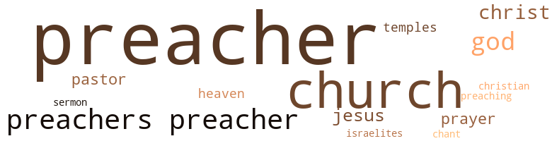

Jule, by Henderson, George Wylie (1946)
98 music-related terms matched in this text.
Most frequent terms in this topic: singing (14); music (12); rhythm (11); danced (10); dance (8)
boogie.n.01
Definition: an instrumental version of the blues (especially for piano)
| word | sentence |
|---|---|
| boogie | She did the boogie , watching the rhythm of her feet " What 's the matter with you , gal ? " |
dance.n.01
Definition: an artistic form of nonverbal communication
| word | sentence |
|---|---|
| dance | He sat there listening to the music and watching the couples dance . |
| dance | They stood at the far end of the bar , watching the couples dance . |
| dance | " Let 's dance , " Lou said . |
| dance | " Let 's dance , Jule . |
dance.v.03
Definition: skip, leap, or move up and down or sideways
| word | sentence |
|---|---|
| danced | Dr. Mootiy danced on the floor of the wagon . |
| danced | The wet pavement mirrored the signs that flickered overhead , and the glare of street lights danced in his eyes . |
| dancing | He stared at the lights , queer patterns dancing before his eyes . |
| dance | " Like to dance ? " |
| danced | They danced easily together , her body pressed against his . |
| dance | " I like to dance with you , " she said . |
| dancing | He paused , then went on knowingly : " Because what you order while dancing with your girl friend you can let her pay for . |
| danced | Doctors ' wives danced with college boys , and doctors with society gals . |
| danced | A tan gal danced around solo-fashion , a glass cupped between her fingers . |
| danced | They crowded around the bandstand and danced in the aisles . |
| danced | They danced on the boat and promenaded around the deck . |
| dancing | They dipped their oars in unison , sunlight dancing on the water . |
| dancing | Music floated over the water and they could see couples dancing on the deck . |
| danced | They drank eggnog and danced to the radio . |
| dance | Let 's dance to the music . |
| danced | They danced and Jule held her tight . |
| dance | " I ca n't dance no more , Lou . " |
| danced | The flames danced like forked lightning , and he 'd watch their eerie patterns with a kind of wonder , his beady-black eyes shining . |
kick.v.04
Definition: kick a leg up
| word | sentence |
|---|---|
| kick | I 'll hit her and kick her and stomp her any goddamn time I please . |
| Kick | " Kick and hold your legs straight . |
| kicking | " I 'm kicking , " the girl said . |
| kicking | Jule went down the street , kicking at the snow . |
music.n.01
Definition: an artistic form of auditory communication incorporating instrumental or vocal tones in a structured and continuous manner
| word | sentence |
|---|---|
| music | He said to himself : " I feels like listening to some music . " |
| music | He sat there listening to the music and watching the couples dance . |
| music | The music was hot and loud and the dancing was like nothing he had ever seen before . |
| music | When the music stopped , she looked up at him and her eyes came up close . |
| Music | Music beat against his eardrums , and his temples throbbed . |
| Music | Music rose to a crescendo and lights blazed . |
| Music | Music stopped . |
| Music | Music is got to be hot . " |
| music | The music throbbed . |
| music | The music jumped . |
| music | She went on toddling to the music . |
| music | They whistled and screamed , their feel beating out a rhythm to the music ... . |
| Music | Music floated over the water and they could see couples dancing on the deck . |
| music | Let 's dance to the music . |
| music | Listen to the music , Jule ! " |
| Music | Music played softly . |
| Music | Music grew louder . |
| music | The sound was like music . |
| music | Running water sounded like music . |
piano.n.01
Definition: a keyboard instrument that is played by depressing keys that cause hammers to strike tuned strings and produce sounds
| word | sentence |
|---|---|
| piano | They had another beer and listened to the banging of the piano upstairs . |
rhythm.n.04
Definition: the arrangement of spoken words alternating stressed and unstressed elements
| word | sentence |
|---|---|
| rhythm | Her body moved with a quick rhythm : her feet , her legs , her arms . |
| rhythm | They talked to him now , their voices blending in a kind of rhythm . |
| rhythm | He lengthened his stride , his legs swinging to a gaited rhythm . |
| rhythm | They bumped into each other going up the stairs , beating out a rhythm with their feet . |
| rhythm | He cradled the dice in his palm , listening to the rhythm . |
| rhythm | A lawyer 's wife rocked to the rhythm with a college boy . |
| rhythm | She watched the rhythm of his body . |
| rhythm | She did the boogie , watching the rhythm of her feet " What 's the matter with you , gal ? " |
| rhythm | Couples rocked to the rhythm and their voices shrieked . |
| rhythm | They whistled and screamed , their feel beating out a rhythm to the music ... . |
| rhythm | Jule read the words aloud , listening to the soft rhythm they made . |
rumba.n.01
Definition: syncopated music in duple time for dancing the rumba
| word | sentence |
|---|---|
| rhumba | Anne did the Lindy , snake-hips and rhumba , all rolled into one . |
scat.n.01
Definition: singing jazz; the singer substitutes nonsense syllables for the words of the song and tries to sound like a musical instrument
| word | sentence |
|---|---|
| scat | Lou jerked her feet out of the water and crouched on the scat . |
sing.v.02
Definition: produce tones with the voice
| word | sentence |
|---|---|
| sing | Jule could hear the tires sing , gripping the pavement . |
| sing | They went uptown to Fifty-second Street and listened to a girl sing " Loch Lomond '' against a backdrop of strings . |
singing.n.01
Definition: the act of singing vocal music
| word | sentence |
|---|---|
| singing | They could hear the singing now . |
| singing | They swooped low and swung across the marshes , their wings singing . |
| Singing | Singing came natural to Bertha Mae . |
| singing | They paused in the churchyard , listening to the singing . |
| Singing | Singing was low and sweet . |
| singing | They walked down a furrow , listening to the singing , and corn leaves stung their faces . |
| Singing | Singing floated out from the churchyard . |
| singing | It was a sweet singing . |
| singing | Bertha Mae was silent , listening to the singing . |
| Singing | Singing grew louder , rose to a shout . |
| singing | " I hears a singing Jule . |
| singing | She could hear it far into the night , drifting back to her , like singing . . . . |
| singing | He walked down the hallway , his feet cushioned on air , his blood singing . |
| singing | They drank orange blossom cocktails and listened to the singing . |
| singing | He could hear singing . |
| singing | He listened to the singing , floating out from the cabin , low and sweet He stood in the yard , looking at the cabin , his ma 's cabin . |
| singing | They could hear singing , rising on the wind . |
| Singing | Singing sounded sweet . |
| Singing | Singing went down deep . |
| singing | It was a big singing . |
song.n.01
Definition: a short musical composition with words
| word | sentence |
|---|---|
| song | " Got it for a song . |
swing.n.05
Definition: a style of jazz played by big bands popular in the 1930s; flowing rhythms but less complex than later styles of jazz
| word | sentence |
|---|---|
| jive | Pimps took over from the college boys and laid some heavy jive . |
tone.v.01
Definition: utter monotonously and repetitively and rhythmically
| word | sentence |
|---|---|
| chant | Waiters began to chant : " Mary had a little lamb , a little lamb , a little lamb . |
tune.n.01
Definition: a succession of notes forming a distinctive sequence
| word | sentence |
|---|---|
| tune | He whistled a tune under his breath . |
| tune | It was a merry tune , a lilting tune , and whistling it made his blood tingle . |
| tune | It was a merry tune , a lilting tune , and whistling it made his blood tingle . |
| line | " On this line . " |
whistle.n.01
Definition: the sound made by something moving rapidly or by steam coming out of a small aperture
| word | sentence |
|---|---|
| whistles | " I likes th ' way it whistles in th ' treetops . " |
whistle.v.01
Definition: make whistling sounds
| word | sentence |
|---|---|
| whistled | Rollo whistled for the dogs . |
| whistling | He made a soft whistling sound through his teeth , and the dogs howled and broke for the swamp . |
| whistle | He stepped into the night and began to whistle . |
| whistle | She could hear his whistle going down the road and across the fields . |
| whistling | She stared at the moonlight slanting through cracks in the roof , and she did n't know whether she was listening to the dogs or to a strange whistling that floated in the wind . . . . |
| whistled | He whistled a tune under his breath . |
| whistling | It was a merry tune , a lilting tune , and whistling it made his blood tingle . |
| whistled | They whistled and screamed , their feel beating out a rhythm to the music ... . |
112 violence-related terms matched in this text.
Most frequent terms in this topic: gun (14); rifle (12); fight (9); balls (9); knife (5)
anger.n.01
Definition: a strong emotion; a feeling that is oriented toward some real or supposed grievance
| word | sentence |
|---|---|
| Anger | Anger flared in Maisie 's face . |
blast.v.03
Definition: use explosives on
| word | sentence |
|---|---|
| shelled | She shucked corn and Jule shelled it and fed the mules . |
dagger.n.01
Definition: a short knife with a pointed blade used for piercing or stabbing
| word | sentence |
|---|---|
| dagger | The lantern dangled from his wrist , and in his right hand he carried a hickory stick , sharpened to a dagger point . |
fight.n.05
Definition: a boxing or wrestling match
| word | sentence |
|---|---|
| fight | " I done had a fight wid Mr. Keye . " |
| fight | He told her about the fight and the way it happened . |
| fights | Coons fights dogs an ' cuts they throats , too . |
| fight | " He done had a fight wid Boykin Keye . " |
| fight | " Me an ' Boykin Keye done had a fight . |
| fight | " Him and Boykin Keye had a fight , " Rollo said . |
| fight | Mrs. Clay cracked the good doctor 's skull and the good doctor got into a fight with Attorney Slaughter , and Maisie told all the bastards to get the hell out . |
| fight | " Who was that slut that started the fight last night ? " |
| fight | The barmaid said : " Had a fight with your gal ? " |
fight.v.02
Definition: fight against or resist strongly
| word | sentence |
|---|---|
| fight | " I did n't want to fight him , Ma , but he came at me with a gun . |
| fought | The car fought its way to the hilltop . |
| fought | He was told about Joshua and how Joshua fought the battle of Jericho and the walls came tumbling down . |
flog.v.01
Definition: beat severely with a whip or rod
| word | sentence |
|---|---|
| lathered | He lathered soap over his body and rinsed himself . |
gag.v.06
Definition: cause to retch or choke
| word | sentence |
|---|---|
| Choke | Choke me so I ca n't holler ! |
| choked | He stepped on the brake hard , and the motor choked . |
| choke | Jule pulled out the choke and gave it gas . |
| choke | He pulled out the choke . |
gun.n.01
Definition: a weapon that discharges a missile at high velocity (especially from a metal tube or barrel)
| word | sentence |
|---|---|
| gun | Smoke puffed from Rollo 's gun . |
| Guns | Guns were running wet . |
| gun | Boykin Keye walked toward Jule , the butt of the gun clutched between his fingers . |
| gun | Jule picked the gun out of the dust . |
| gun | He looked at the gun and dropped it in his pocket . |
| gun | " I did n't want to fight him , Ma , but he came at me with a gun . |
| gun | It did n't seem right , Ma , with the gun in his hand . " |
| gun | I got his gun . " |
| gun | " You got his gun ? " |
| gun | Jule drew the gun from his pocket and dropped it in Rollo 's hand . |
| gun | The gun was loaded all around . |
| gun | He dropped the gun on the counter . |
| gun | He hid the gun under the saddle , just above the horse 's rump , and rode the horse around to the front of the store . |
| gun | He loaded the gun and laid it across his lap , pinned against the saddle horn with the weight of his body . |
| gun | He felt the gun jiggle as his horse broke into a gallop . |
| guns | " Only I ai n't got no guns or nothing . " |
| guns | " Do n't worry about guns , " Bob said . |
| guns | " Dad 's got plenty of guns . |
injury.n.01
Definition: any physical damage to the body caused by violence or accident or fracture etc.
| word | sentence |
|---|---|
| harm | " Lordy , Kate , " Caroline said , " Sis ' Frances do n't means no harm ! |
| harm | Dogs is got sense like people - only they ai n't gwine do you no harm . " |
| harm | Do n't mean no harm . |
| harm | Cooper Jackson said : " He do n't means no harm , Miss Ca ' line . |
| hurt | There was neither shame nor hurt in her eyes . |
kick.v.04
Definition: kick a leg up
| word | sentence |
|---|---|
| kick | I 'll hit her and kick her and stomp her any goddamn time I please . |
| Kick | " Kick and hold your legs straight . |
| kicking | " I 'm kicking , " the girl said . |
| kicking | Jule went down the street , kicking at the snow . |
kick_back.v.02
Definition: spring back, as from a forceful thrust
| word | sentence |
|---|---|
| kick | I 'll kick her behind all over hell if I feel like it and there ai n't no bastard can stop me . |
| kick | " Do I have to kick ? " the girl said . |
| Kick | Kick and paddle with your hands . " |
| kicked | She kicked her way across the pool , Jule bracing his hand against her stomach . |
| kicked | She hung up Jule 's pajamas and robe and kicked his slippers under the couch . |
| kicked | He looked at her robe flung across the couch , her mules kicked under a chair , her gown dangling over the chair . |
kill.v.10
Definition: cause the death of, without intention
| word | sentence |
|---|---|
| kill | I 'll kill you ! " |
| kill | Caroline turned swiftly , mumbling to herself : " Lord , Jesus , I do n't know what gits into Alex. He always wants to kill hogs right when he knows I is got my washin ' to do . |
| kill | He gits a taste of fresh meat in his mouth an ' right away he wants to kill hogs , an ' he figgers evahbody is got to stop an ' wait on him ! |
| kill | " Honey , ai n't you glad you ai n't got no fool husband to git you out of bed dis early in de mornin ' to kill hogs ? " |
| killed | He was told about David and Goliath too : how little David killed the Philistine with a stone from his slingshot . |
knife.n.02
Definition: a weapon with a handle and blade with a sharp point
| word | sentence |
|---|---|
| knife | Corn leaves cut like a knife . |
| knives | He scrubbed knives and forks and put them on a tray . |
| knife | picked up the butcher knife . |
| knife | " Put dat knife down , Nan , " Caroline said . |
| knife | Nan looked at Alex and the knife dropped from her fingers . |
| knife | He held the fork in his left hand and carried the food to his mouth on the blade of the knife . |
musket_ball.n.01
Definition: a solid projectile that is shot by a musket
| word | sentence |
|---|---|
| balls | Alex bought peppermint balls with red stripes spiraling around the middle . |
| balls | " I likes peppermint balls , " Dr. Mootry said . |
| balls | " But peppermint balls is nice , " Dr. Mootry said . |
| balls | " Peppermint balls tastes good an ' sucks good too . " |
| ball | The sun came up red like a round ball through the piny woods . |
| balls | He bounced around on the balls of his feet , spreading his arms and feeling himself . |
| balls | She took hot biscuits from the oven and placed a platter of meat balls on the table . |
| balls | She tied balls on the Christmas tree and strung tinsel and lights on the branches . |
| balls | Rollo scooped up a handful of peppermint balls and thrust them into Jule 's pocket . |
| ball | " Bank the eight ball in the side pocket twice . " |
| balls | Kate rocked on the balls of her feet and spun around . |
open_fire.v.01
Definition: start firing a weapon
| word | sentence |
|---|---|
| fires | " Dem fires sho ' do burns good , do n't they , Miss Ca ' line ? " |
pain.v.02
Definition: cause emotional anguish or make miserable
| word | sentence |
|---|---|
| hurt | They hurt her little toe . |
| hurt | " You wo n't hurt me , will you , Jeff ? " |
punch.n.01
Definition: (boxing) a blow with the fist
| word | sentence |
|---|---|
| punch | The caterer moved from table to bar , from bar to table , mixing punch and arranging the buffet . |
| punch | Maisie walked over to the bar and tasted the punch . |
punch.v.01
Definition: deliver a quick blow to
| word | sentence |
|---|---|
| plugged | He drew a bead on the squirrel and plugged him . |
rifle.n.01
Definition: a shoulder firearm with a long barrel and a rifled bore
| word | sentence |
|---|---|
| rifle | Rollo fed cartridges into his rifle . |
| rifle | Rollo loaded the shotgun and handed Jule the rifle . |
| rifle | Rollo squatted in a hollow facing the wind , rifle cocked . |
| rifle | Rollo stood there with the rifle dangling from his hand . |
| rifle | I ca n't hold the rifle steady ! |
| rifle | He dropped the rifle . |
| rifle | Jule picked up the rifle . |
| rifle | Rollo went into the house and got his rifle . |
| rifle | Rollo fished the rifle from beneath the saddle and fitted the parts together . |
| rifle | He tethered his horse to the gate and went forward , the rifle cradled in his arm . |
| rifle | " You use a shotgun for rabbits , " Rollo said , " but for squirrels you need a rifle . |
| rifle | " He got dogs an ' horses an ' he let me shoot his rifle ! " |
riot.n.01
Definition: a public act of violence by an unruly mob
| word | sentence |
|---|---|
| riot | You want to start a riot or something ? " |
| Riot | " Riot about what ? " the blond girl said . |
| riot | " Ai n't going to be no riot . " |
scuffle.v.02
Definition: fight or struggle in a confused way at close quarters
| word | sentence |
|---|---|
| tussled | They swam toward each other under water , tussled and bobbed to the surface for air . |
shoot.v.02
Definition: kill by firing a missile
| word | sentence |
|---|---|
| shoot | I ca n't shoot any more ! " |
| Shoot | " Shoot me them dishes , boy ! " |
| shoot | Let somebody shoot what 's got money . |
| shoot | " He got dogs an ' horses an ' he let me shoot his rifle ! " |
shooting.n.02
Definition: killing someone by gunfire
| word | sentence |
|---|---|
| shooting | Birds are good shooting now . " |
shotgun.n.01
Definition: firearm that is a double-barreled smoothbore shoulder weapon for firing shot at short ranges
| word | sentence |
|---|---|
| shotgun | Rollo loaded the shotgun and handed Jule the rifle . |
| shotgun | " You use a shotgun for rabbits , " Rollo said , " but for squirrels you need a rifle . |
spear.n.01
Definition: a long pointed rod used as a tool or weapon
| word | sentence |
|---|---|
| shaft | It was a small room , tight against an air shaft . |
| shaft | Smells came up from the air shaft . |
sting.n.03
Definition: a painful wound caused by the thrust of an insect's stinger into skin
| word | sentence |
|---|---|
| sting | He felt his arms sting . |
violence.n.01
Definition: an act of aggression (as one against a person who resists)
| word | sentence |
|---|---|
| violence | They climbed the embankment Rain and wind grew in violence , the storm whipping through the trees . |
wale.n.01
Definition: a raised mark on the skin (as produced by the blow of a whip); characteristic of many allergic reactions
| word | sentence |
|---|---|
| Welts | Welts rose on her cheek . |
whip.v.03
Definition: thrash about flexibly in the manner of a whiplash
| word | sentence |
|---|---|
| whipped | She went to the basin and whipped up a lather and squeezed suds through her stockings and panties . |
whip.v.04
Definition: strike as if by whipping
| word | sentence |
|---|---|
| lashed | Rain squalls lashed the windshield . |
wrath.n.01
Definition: intense anger (usually on an epic scale)
| word | sentence |
|---|---|
| wrath | Kate 's face looked like the wrath of God come alive . |
93 religion-related terms matched in this text.
Most frequent terms in this topic: preacher (38); church (11); preachers (9); God (8); Christ (5)
christian.n.01
Definition: a religious person who believes Jesus is the Christ and who is a member of a Christian denomination
| word | sentence |
|---|---|
| Christian | She said softly : " I is a Christian , Sister Kate ! |
church.n.02
Definition: a place for public (especially Christian) worship
| word | sentence |
|---|---|
| church | They stood in the shadow beneath the sweetgum and watched the lights go on in the church . |
| church | " We 's goin ' in church now , " Jule said . |
| church | " But Ma wants us in church , Jule . |
| church | She wants to see us in church . " |
| church | " We got to be in church , come preachin ' , Jule . " |
| church | " She wants us in church to hear th ' preachin ' . " |
| church | Quiet an ' peaceful , like bein ' in church . |
| church | It was a church sinking . |
| church | " We 'd meet after supper , " Jule said , " an ' sometimes after church . |
| church | On Sundays he got up early and went to church . |
| church | On Sundays , when he went to church , he strutted around like a peacock , greeting people and shaking their hands , and announcing in a deep , bass voice : " I is Dr. Mootry , an ' I feels poppin ' fine ! " |
curate.n.01
Definition: a person authorized to conduct religious worship
| word | sentence |
|---|---|
| pastor | " But de reverend is our pastor ! |
| pastor | De reverend is - " " Our pastor , nothin ' ! " |
| pastor | An ' I tries to serve our pastor de best way I knows how ! " |
eden.n.01
Definition: any place of complete bliss and delight and peace
| word | sentence |
|---|---|
| heaven | Did you ever feel like - like you was in heaven ? |
| heaven | If you lives right , you goes to heaven ? |
god.n.03
Definition: a man of such superior qualities that he seems like a deity to other people
| word | sentence |
|---|---|
| God | " Water is somethin' what God made ! " |
| God | " But , Ma , did God make it to stand up straight ? " |
| God | Kate 's face looked like the wrath of God come alive . |
| God | And suddenly there was with the angel a multitude of the heavenly host praising God , and saying : Glory to God in the highest , and on earth peace , good will toward men . ' " |
| God | And suddenly there was with the angel a multitude of the heavenly host praising God , and saying : Glory to God in the highest , and on earth peace , good will toward men . ' " |
| God | By God , I 'm a white man ! |
| God | I 'm crying because , by God , I 'm so goddamn mad ! " |
| God | " By God , man , I 'd talk to a rattlesnake , if a rattlesnake could talk ! |
jesus.n.01
Definition: a teacher and prophet born in Bethlehem and active in Nazareth; his life and sermons form the basis for Christianity (circa 4 BC - AD 29)
| word | sentence |
|---|---|
| Jesus | Jesus Christ ! |
| Jesus | " Jesus Christ ! " |
| Jesus | " Jesus Christ ! " |
| Jesus | " Jesus Christ ! " |
jew.n.01
Definition: a person belonging to the worldwide group claiming descent from Jacob (or converted to it) and connected by cultural or religious ties
| word | sentence |
|---|---|
| Israelites | But the stoiy of the Israelites excited the child . |
messiah.n.01
Definition: any expected deliverer
| word | sentence |
|---|---|
| Christ | Alex spoke the words simply : " For unto you is born this day in the city of David a Saviour , which is Christ the Lord . |
| Christ | Jesus Christ ! |
| Christ | " Jesus Christ ! " |
| Christ | " Jesus Christ ! " |
| Christ | " Jesus Christ ! " |
prayer.n.01
Definition: the act of communicating with a deity (especially as a petition or in adoration or contrition or thanksgiving)
| word | sentence |
|---|---|
| prayer | She went to prayer meeting on Wednesdays and choir practice on Fridays . |
| prayer | They went to prayer meeting in the twilight . |
| prayer | They is jes ' singin ' befo ' prayer meetin ' . " |
preacher.n.01
Definition: someone whose occupation is preaching the gospel
| word | sentence |
|---|---|
| preacher | " It 's nice when a new preacher comes along , " Bertha Mae said . |
| preachers | " I likes new preachers too , " Jule said . |
| Preachers | " Preachers always gits pie ! " |
| Preachers | " Preachers is preachers , " Jule said . |
| preachers | " Preachers is preachers , " Jule said . |
| preacher | Frances Donner and the preacher were sitting on Caroline 's porch when Kate walked up . |
| preacher | She looked at Frances Donner , fanning herself and talking to the preacher . |
| preacher | " Good afternoon , Sister , " the preacher said . |
| preacher | Kate smiled at the preacher - " Howdy do , Reverend ! " |
| preacher | She only tryin ' to entertain de preacher whilst he 's here ! |
| preacher | " You ai n't takin ' de preacher nowhere ! " |
| preacher | Kate turned to Frances Donner : " Is you goin ' wid de preacher ? " |
| preacher | " Is you goin ' wid de preacher ? " |
| preacher | " Is you goin ' wid de preacher , or ai n't you ? " |
| preacher | " Is you goin ' wid de preacher ? |
| preachers | " Mebbe preachers likes heifers ! " |
| preacher | They talked about the preacher and their Sunday school lessons . |
| preachers | ... He knows all the best people ; doctors , lawyers , social workers and preachers , pimps and high society gals . |
| preacher | Kate came out to visit Caroline and Alex in June and to see the new preacher . |
| Preachers | " Preachers is preachers , " Kate told herself simply . |
| preachers | " Preachers is preachers , " Kate told herself simply . |
| preachers | " You is got to see preachers . " |
| preacher | " Alex done gone to fetch de new preacher , " Caroline said . |
| preacher | " Fetch de new preacher ? " |
| preacher | " I is got to see Alex. New preacher do n't matter . " |
| preacher | Alex an ' me ca n't keep de preacher all de time . " |
| preachers | She likes preachers . " |
| preachers | Dat heifer likes preachers ! |
| preachers | She likes preachers an ' mo ' preachers ! |
| preacher | Kate listened to the preacher 's sermon during the meeting . |
| preacher | The preacher was a powerful preacher . |
| preacher | The preacher was a powerful preacher . |
| preacher | The preacher was a gracious preacher . |
| preacher | The preacher was a gracious preacher . |
| preacher | Kate sat across from the preacher at dinner . |
| preacher | The preacher was tall and dignified . |
| preacher | The preacher ate heartily : fried chicken and greens , garden peas , corn on the cob , buttermilk and hot biscuits . |
| preacher | Kate watched the preacher . |
| preacher | " The Bible is a philosophy , " the preacher said . |
| preacher | The preacher cleared his throat and reached for another biscuit . |
| preacher | " Sister , " the preacher said , " hell is a relative term . |
| preacher | " The Bible says , " the preacher continued , " Knock and it shall be opened unto you . |
| preacher | " You burn in hell , " the preacher said , " even as it is written , Sister . " |
| preacher | " You is a fine preacher , Reverend ! |
| preacher | You is a good preacher ! " |
| preacher | The preacher sank his teeth into the biscuit . |
| preacher | The preacher liked biscuits . |
| preacher | " You is gwine wait on de new preacher , Jule , " Caroline said . |
| preacher | " He 's a fine preacher , Jule . |
| preacher | He 's a wonderful preacher ! " |
sermon.n.02
Definition: a moralistic rebuke
| word | sentence |
|---|---|
| preaching | They walked in the twilight before the preaching . |
| sermon | Kate listened to the preacher 's sermon during the meeting . |
temple.n.03
Definition: an edifice devoted to special or exalted purposes
| word | sentence |
|---|---|
| temples | Music beat against his eardrums , and his temples throbbed . |
| temples | Blood pounded in his temples . |
tone.v.01
Definition: utter monotonously and repetitively and rhythmically
| word | sentence |
|---|---|
| chant | Waiters began to chant : " Mary had a little lamb , a little lamb , a little lamb . |